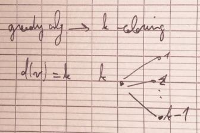
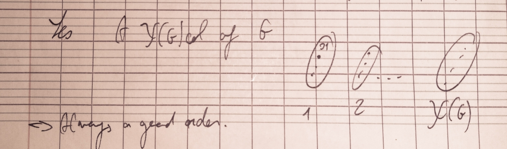
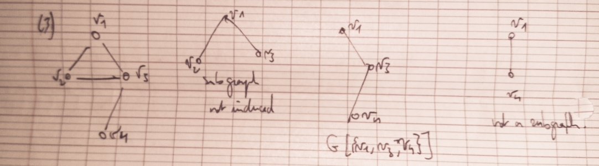
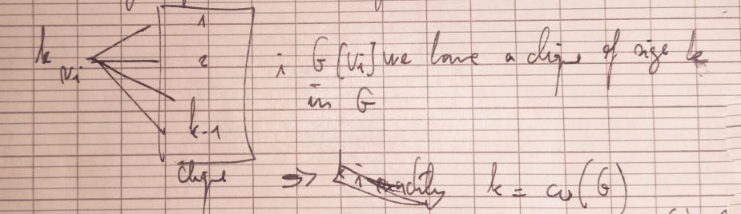
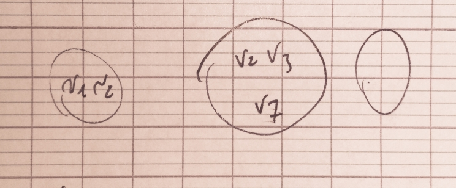
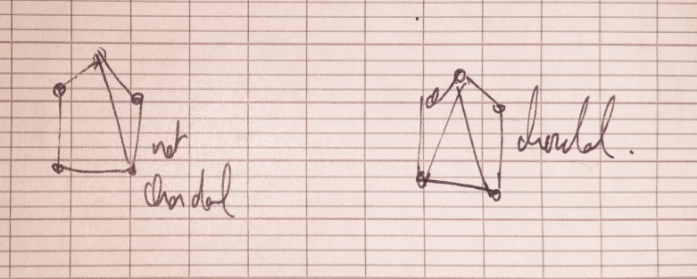

Graph and discrete structure
Myriam Preissman (GSCOP) - 4 lectures.
Lecture 2
- χ(G).
- ω(G).
- Lower bound : χ(G)≥ω(G).
- A proper coloring of V(G).
- Decide if χ(G)=2 is easy.
- χ(G)=k,k≤3 is hard.
A gready exponential algorithm.
From the greedy algorithm we can deduce an upperbound :
χ(G)≤Δ(G)+1
With : d(v)=# edges incident to v.
Δ(G)=maxd(v),∀v∈V
gready alg. → k-coloring.

Δ(G)≥d(G)≥k−1
⇒k≤Δ(G)+1
Graph χ(G)=ω(G)=Δ(G)+1 if G is a complete graph.
G,∃ ordering of V s.t. greedy seq. alg provide a χ(G)-coloring ?

⇒ always a good order.
Definition and Theorem
v∈V is said simplicial if N(G) is a clique with N(v)={w∈V,vw∈E}.
In other words a graph G, a vertex x is simplicial if its neighbourhood N(x) induces a complete (Kn,n) subgraph of G.
v1,v2,⋯vn is a simplicial ordering if vi is simplicial in G[i], with vi={v1,v2,⋯,vn}.
N(G)=ΓG(v)={u∈V:uv∈E}
The neighbourhood of a vertex v in a graph G is the induced subgraph of G consisting of all vertices adjacent to v.
G=(V,E) and S⊂V. Then the induced subgraph G[S] is the graph whose vertex set is S and whose edge set consists of all of the edges in E that have both endpoints in S.
G′(V′,E′) is a subgraph of G if V′⊆V and E′⊆E.
G[V] if E′={e∈E, both extremities of e are in V′}.
G′ is an inducted subgraph of G if G[V′].

if v1,v2,⋯,vn is a simplicial ordering of V then the greedy seq-alg provides a χ(G)-coloring.
Assume you get a k-coloring.

∃ simplicial ordering ⇔∀ V′⊆V, G[V′] contains at least one simplicial vertex.
v1,v2,⋯,vn simplicial ordering of V. V′⊆V.

V′⊆Vj with j=max{i∋vi∈V′}.
if v simplicial in G[Vj],vj simplicial G[V′].
vi is simplicial in G[vi],vi={v1,⋯,vi}.
|
|
| vn |
G |
| vn−1 |
Gn−1 |
Start with V.
- Choose a simplicial vertex vn in G[V].
- Choose a simplicial vertex vn−1 in G[V−vn−1].
- Choose a simplicial vertex vi in ...
- [...]
- Choose a simplicial vertex v1 in ...
G has a simplicial ordering ⇒G has no chordless cycle.
Ck, k≥4= chordal graphs.

A chordless cycle of a graph G is a graph cycle of length at least four in G that has no cycle chord (i.e., the graph cycle is an induced subgraph).
A chordal graph is a simple graph possessing no chordless cycles. A chordless cycle is sometimes also called a graph hole (Chvátal).
A chord of a graph cycle C is an edge not in the edge set of C whose endpoints lie in the vertex set C.
We may assume that G is connected.
G≠ clique ⇒∃ clique K⊆V∋G−K is not connected. (clique subset).
G≠ clique ,∃x,y∈V∋xy∉E.
G−(V∖{x,y}) is not connected.
G−(V∖{x,y}) is a separation of G.
∃ a minimal separation of G.